Comparison to CLASS
This comparison script automatically builds the latest version of the fantastic Einstein-Boltzmann solver CLASS and compares its results to the latest version of SymBoltz:
using SymBoltz
lmax = 6
M = SymBoltz.ΛCDM(; lmax)
pars = SymBoltz.parameters_Planck18(M)
prob = CosmologyProblem(M, pars, Dict(M.Λ.Ω₀ => 0.5), [M.g.ℰ ~ 1], tspan = (1e-6, 1e3))Cosmology problem for model ΛCDM
Stages:
Background
Thermodynamics
Perturbations
Parameters:
c₊Ω₀ = 0.26447041034523616
b₊Ω₀ = 0.04936780993111075
γ₊T₀ = 2.7255
I₊ns = 0.965
h = 0.6736
h₊m = 1.0695971529767385e-37
I₊As = 2.099e-9
b₊rec₊Yp = 0.2454
ν₊Neff = 2.99
Λ₊Ω₀ = 0.5 (shooting guess)
Final conditions:
ℰ(t) ~ 1Background
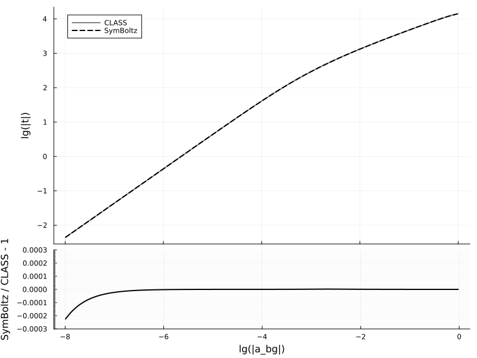
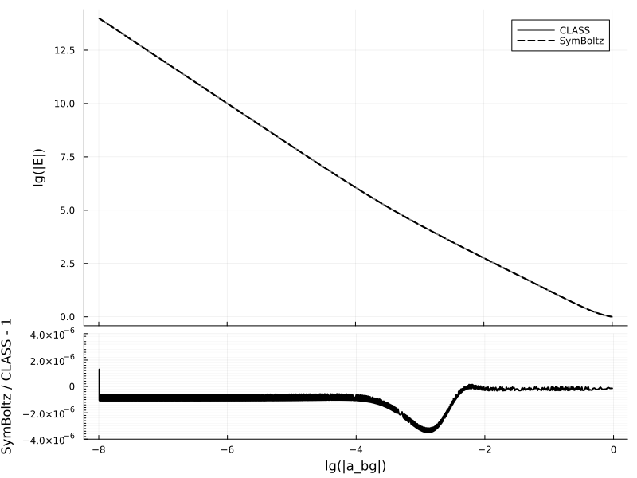

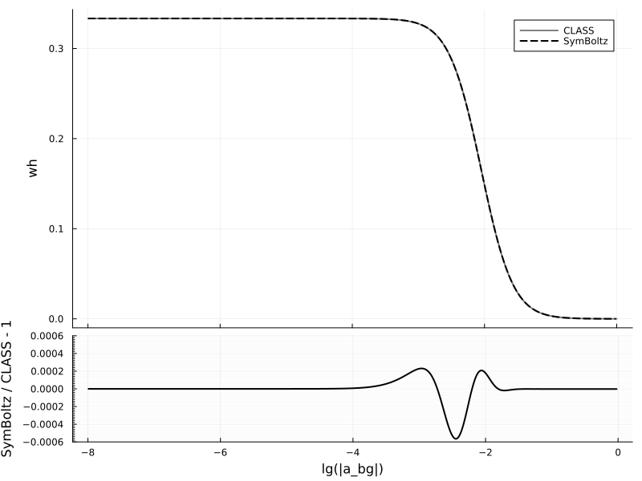
Thermodynamics
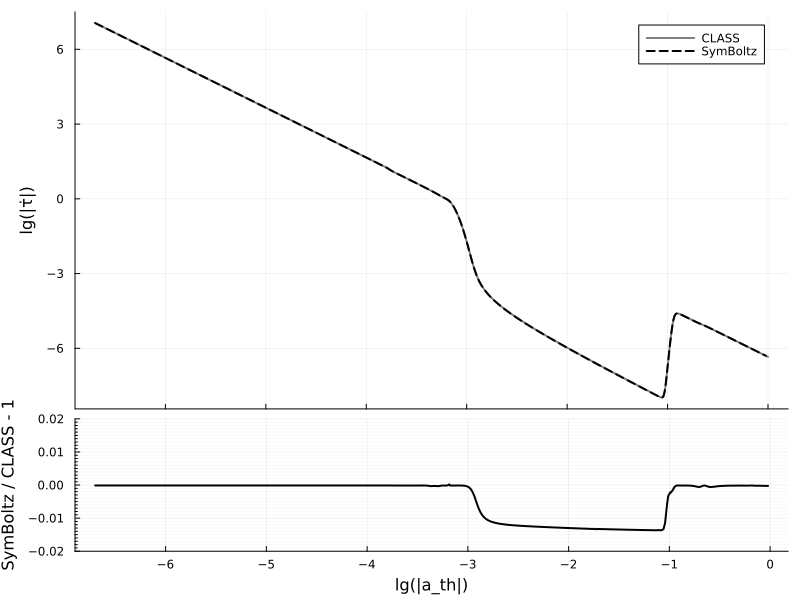
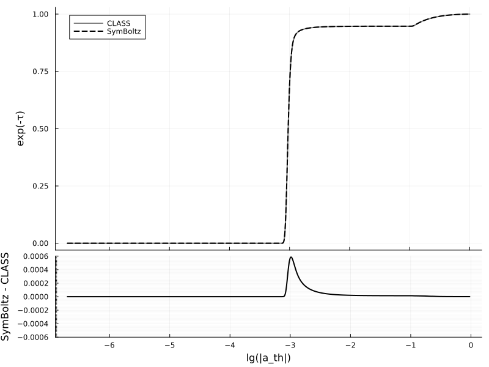
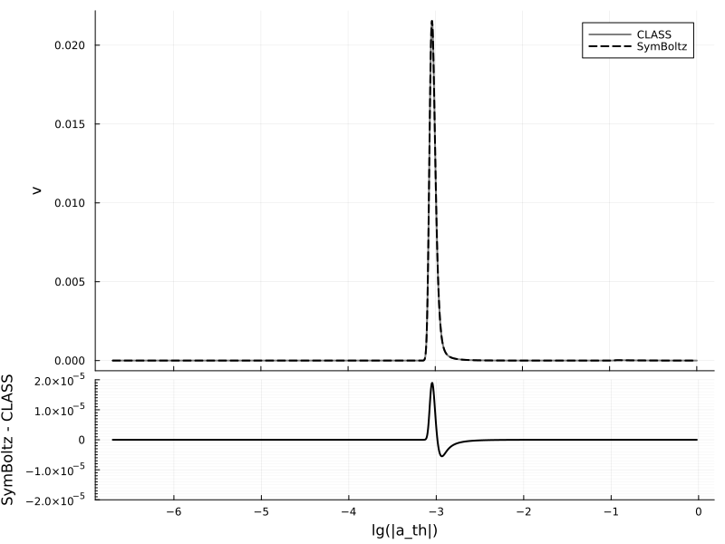
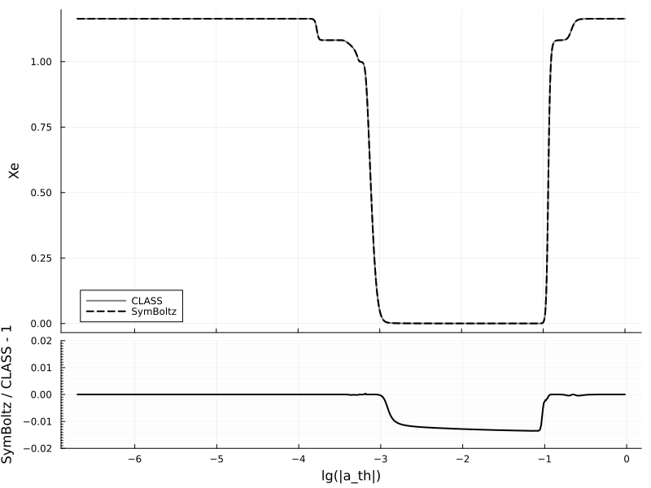
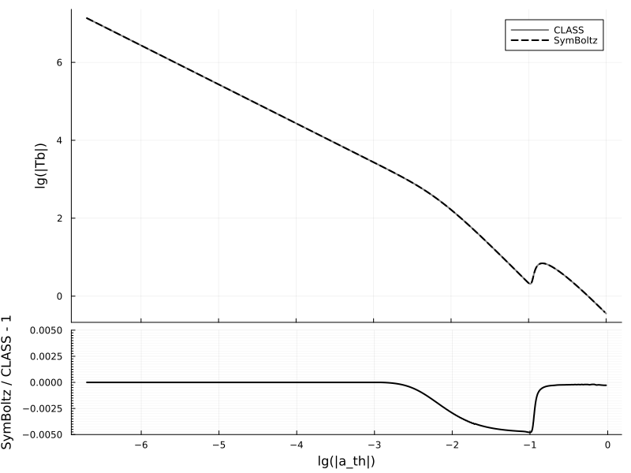
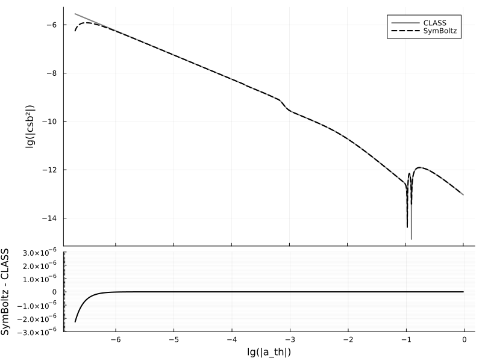
Perturbations
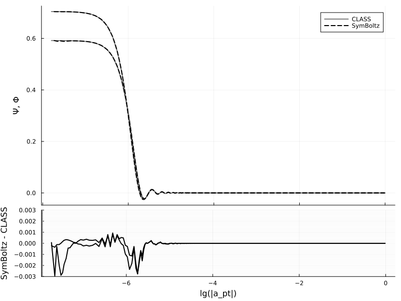


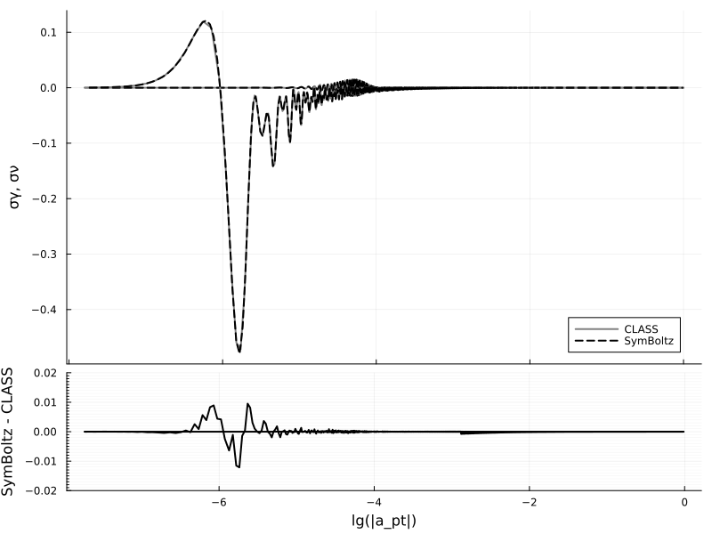

Power spectrum
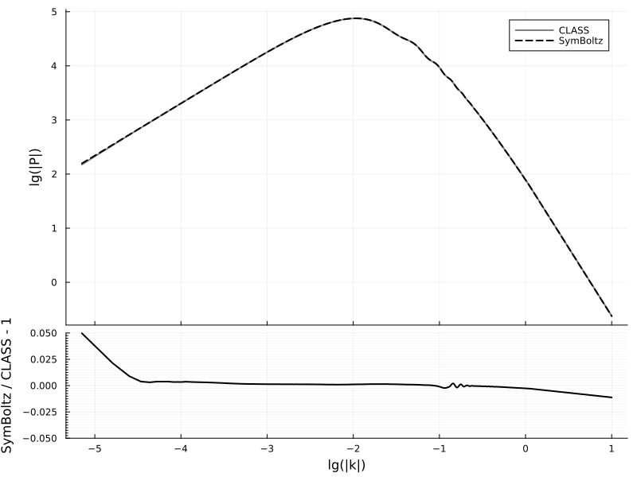
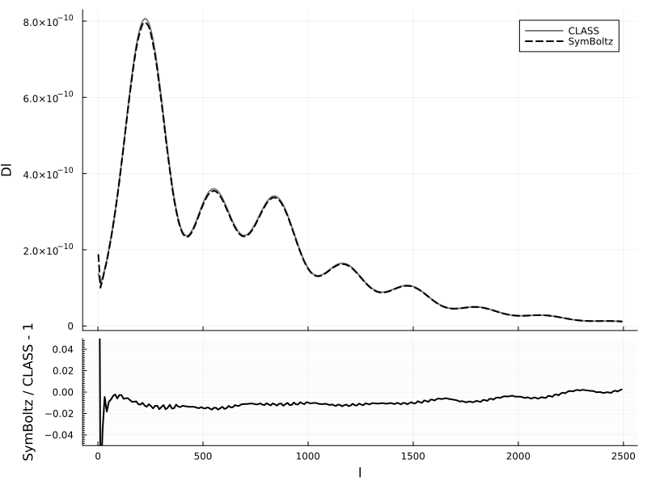